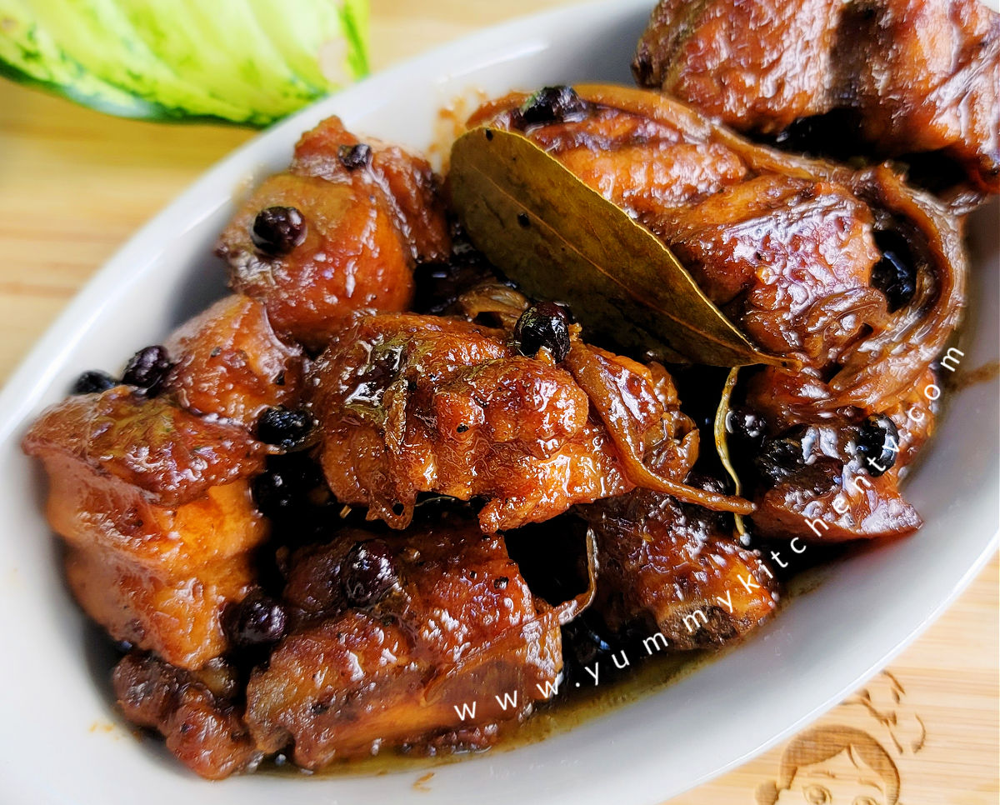

About Myself
Name:
Dean Stuart B. Mondejar
Birthdate:
December 20, 2006
Address:
District 7, Kinabjangan, Nasipit, Agusan del Norte
Job:
Student Assistant
My Childhood
I grew up surrounded by people who helped me learn important values. When I was a child, I enjoyed playing with friends, spending time with my family, and discovering new things. Those simple experiences helped shape the person I am today.
My Teenage Life
During my teenage years, I learned more about responsibility, friendship, and making good decisions. School activities and the people I met helped me become more confident. I also started to understand the importance of working hard for my goals.
My Adulthood
As I continue my college journey, I am learning to manage my time, improve my skills, and become more independent. I know there will be challenges, but I want to face them with patience and determination while making my family proud.
My Hobbies
My Hobbies Inside Our Home
- Playing the piano
- Scrolling Videos from Internet
- Doing Housechores
My Hobbies Outside Our Home
- Biking
- Playing the Piano
- Hanging out with friends
- Eating in the park
My Favorites
My Favorite Artist
My favorite artist is Ogie Alcasid. I enjoy listening to his songs because many of them express love, happiness, and deep emotions. His music is meaningful and relatable, especially when it comes to love and relationships. I admire his talent as a singer and songwriter, and his songs always bring comfort and remind me of the beauty of love.
My Favorite Food

One of my favorite foods is Pork Humba. I really enjoy eating it, especially when my mother cooks it. Her cooking makes the food more special and delicious for me. I love eating Pork Humba with my family because it reminds me of the comfort and happiness of home.
My Favorite Place
My favorite place is Camiguin Island. I like Camiguin because of its beautiful beaches, refreshing hot springs, and amazing natural attractions. It is known as the “Island Born of Fire” because of its volcanic history. I would love to explore its beautiful places, enjoy the peaceful surroundings, and experience the natural beauty that makes Camiguin special.